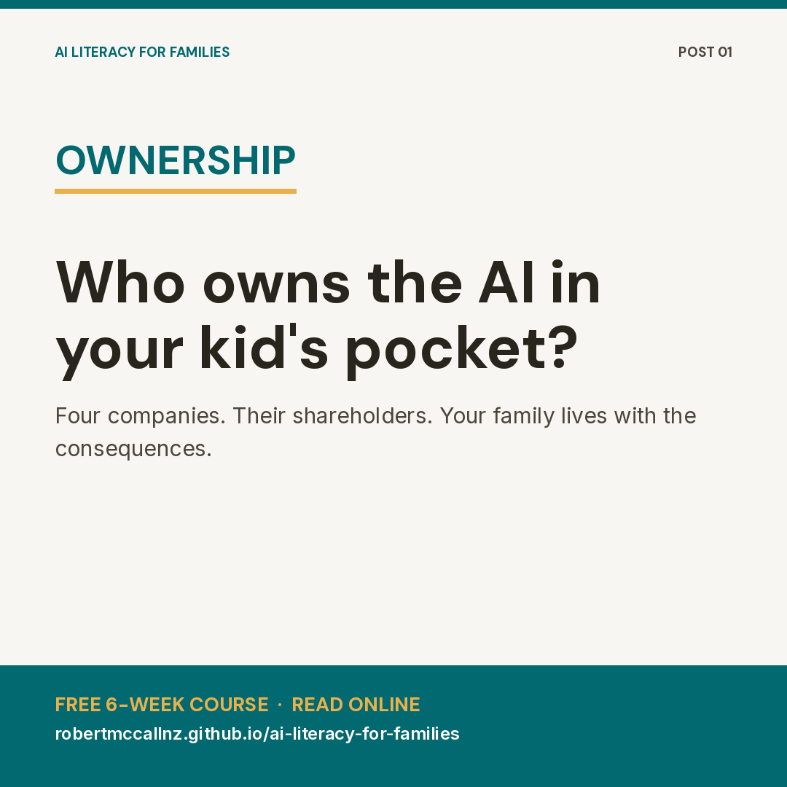
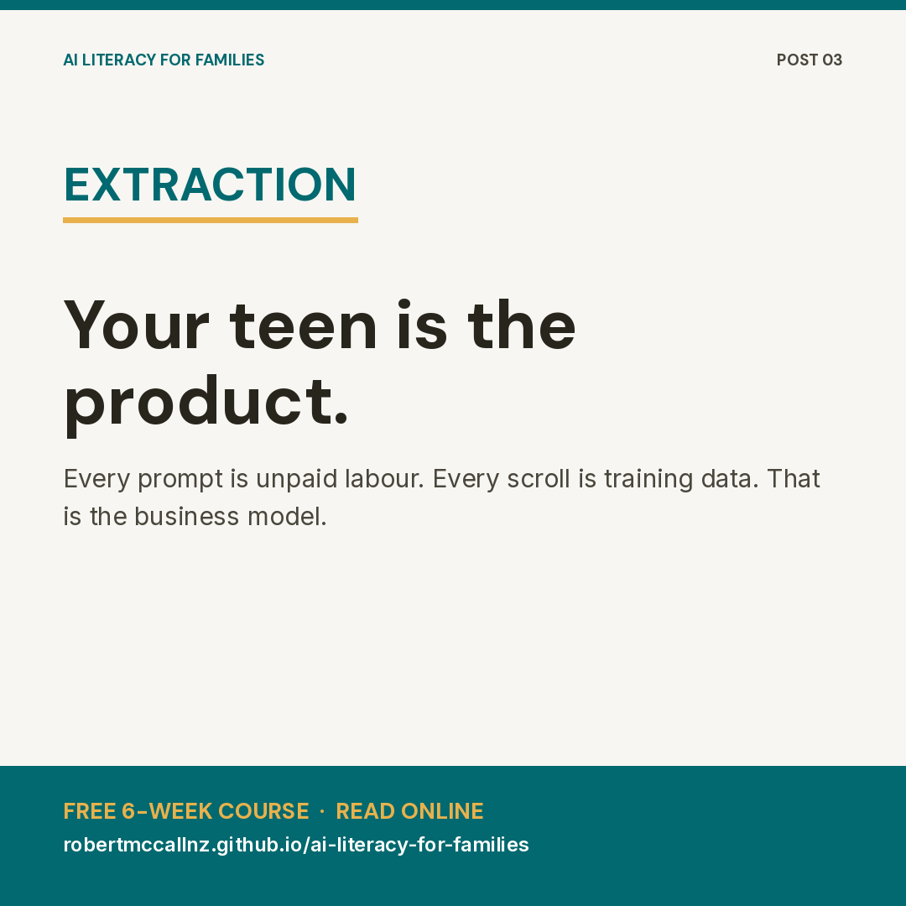
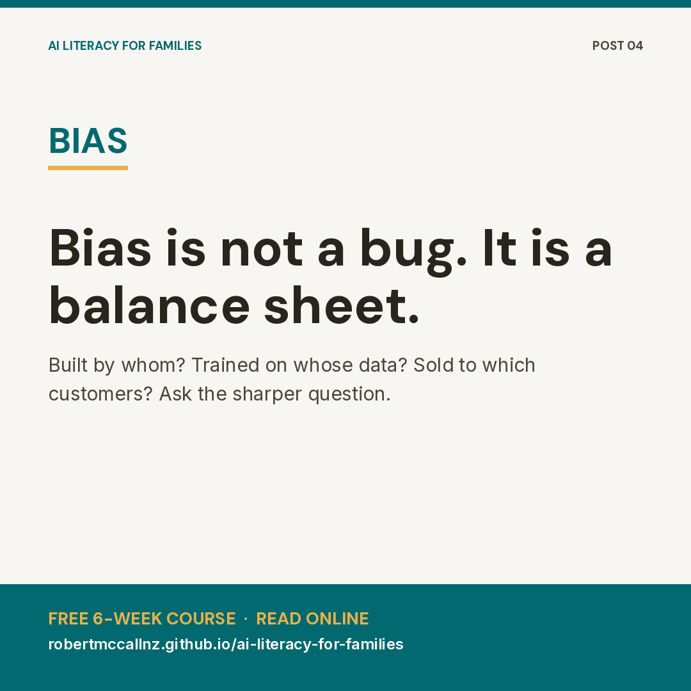
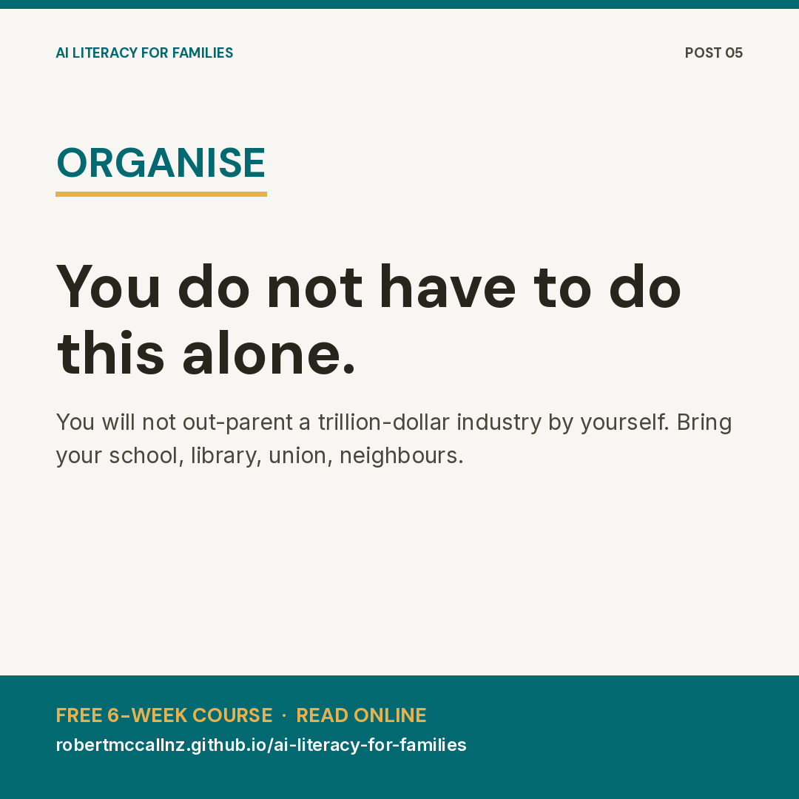

AI Literacy for Families — Social Media Kit
Five punchy posts with Twitter/X, Facebook, and LinkedIn variants — each leading with one socio-economic tension. Matching graphics in square (Instagram, Facebook, LinkedIn) and landscape (Twitter/X cards) sizes are gathered below.
Graphics gallery
Click any image to open the full-size PNG, then right-click to save. Square graphics are 1080x1080. Landscape graphics are 1200x630.
{kind=link}

{kind=link}
{kind=link}

{kind=link}

{kind=link}

A 5-post launch series for Twitter/X, Facebook, and LinkedIn. Each post leads with one socio-economic tension and links to the free course site.
Site: https://robertmccallnz.github.io/ai-literacy-for-families/ Repo: https://github.com/robertmccallnz/ai-literacy-for-families
Suggested cadence: one post per day for 5 days, or one per week across the 6-week course window. Post 1 is the launch anchor.
Post 1 — Who owns the AI in your kid's pocket?
Tension: Ownership and concentration of AI infrastructure.
Twitter/X
Four companies own most of the AI your kids talk to every day.
Their shareholders set the rules. Your family lives with the consequences.
I wrote a free 6-week course so parents and teens can push back together.
Read it in the browser, no signup: robertmccallnz.github.io/ai-literacy-for-families
Who actually owns the AI your kids are using?
Not the school. Not the teacher. A handful of corporations whose obligations run to shareholders, not to your family.
I built a free 6-week AI Literacy course for parents and teens that starts from this question and works outward. No jargon, no fear-mongering, no signup. Read every word in your browser or download it to print.
Six weeks. One hour a week. Tools you can actually use around the kitchen table.
Start here: https://robertmccallnz.github.io/ai-literacy-for-families/
Share it with anyone running a parent group, library session, or after-school programme.
The AI tools entering classrooms and bedrooms are not neutral utilities. They are products of a small number of firms whose first duty is to their shareholders.
That is the starting point of a free 6-week AI Literacy course I have published for families and local organisers. It treats ownership, incentives, and data flows as the first lesson, not a footnote.
The full curriculum, a printable family workbook, and a Substack-ready post pack are openly licensed (CC BY-SA 4.0) for any educator, library, union local, or community group to adapt.
Course site: https://robertmccallnz.github.io/ai-literacy-for-families/ Source repo: https://github.com/robertmccallnz/ai-literacy-for-families
Post 2 — Privacy is a class issue
Tension: Privacy as a paid privilege, not a right.
Twitter/X
Privacy is sold as a premium feature.
That means working families get tracked, and wealthier ones get to opt out.
Week 3 of the course teaches teens to see the price tag on every "free" tool.
robertmccallnz.github.io/ai-literacy-for-families
Notice how privacy keeps getting more expensive?
The "free" version watches you. The paid version watches you less. The deluxe tier promises not to watch you at all. Privacy has been turned into a class issue, and our kids are growing up inside it.
Week 3 of the free AI Literacy for Families course gives parents and teens the tools to see this clearly and decide together what their household is willing to trade, and what it is not.
Read it online, print the workbook, or share it with your school: https://robertmccallnz.github.io/ai-literacy-for-families/
Privacy has quietly been restructured as a paid tier. The default experience is surveillance; meaningful data protection is increasingly a premium feature.
This has serious consequences for households on tighter budgets, who absorb the data costs of "free" products that wealthier users can afford to opt out of.
Week 3 of the AI Literacy for Families course frames privacy as a structural and class issue, not a personal hygiene problem, and gives families a shared vocabulary to make decisions together.
Free, openly licensed, readable in the browser: https://robertmccallnz.github.io/ai-literacy-for-families/
Post 3 — Your teen is the product
Tension: Extraction of teen attention and data as unpaid labour.
Twitter/X
Every scroll, every prompt, every "free" chatbot conversation your teen has is training data.
They are working. They are not getting paid.
Week 2 of the course makes that visible, and gives families language to talk about it.
robertmccallnz.github.io/ai-literacy-for-families
Here is something most "online safety" talks will not tell you:
Your teenager is not just using these AI tools. They are training them. Every prompt, every correction, every hour of attention is unpaid labour that makes someone else's product more valuable.
That is not a glitch. It is the business model.
Week 2 of the free AI Literacy for Families course gives parents and teens a clear way to see and discuss this, without lecturing and without panic.
The whole 6-week course, plus a printable family workbook, lives here: https://robertmccallnz.github.io/ai-literacy-for-families/
A core blind spot in most "digital wellbeing" curricula: they treat teen users as consumers, when the underlying business model treats them as unpaid contributors.
Every interaction with a "free" AI product is a labour transaction. Attention, prompts, and corrections are inputs into a commercial training pipeline.
Week 2 of the AI Literacy for Families course names this directly and equips families and youth workers to talk about it in plain language.
Adapt it for your school, library, or community organisation: https://robertmccallnz.github.io/ai-literacy-for-families/
Post 4 — Bias is not a bug, it is a balance sheet
Tension: Algorithmic bias as a structural outcome of who builds, funds, and trains AI.
Twitter/X
"The algorithm is biased" makes it sound like an accident.
It is not. It reflects who owns the company, who trains the model, and whose data was cheapest to take.
Week 4 of the course teaches families to read that balance sheet.
robertmccallnz.github.io/ai-literacy-for-families
When a company says "we are working to reduce bias in our AI," ask a sharper question:
Bias in whose favour? Built by whom? Trained on whose data? Sold to which customers?
Bias is not a technical bug to be patched out. It is the predictable outcome of who owns the system and what they need it to do.
Week 4 of the free AI Literacy for Families course gives parents and teens a framework to ask these questions together, without needing a computer science degree.
Read the whole course in your browser, free: https://robertmccallnz.github.io/ai-literacy-for-families/
Conversations about "AI bias" often stop at the model and skip the balance sheet.
Bias is shaped by ownership structures, funding incentives, training data acquisition practices, and target customer markets. Treating it as a purely technical problem hides the political and economic decisions that produced it.
Week 4 of the AI Literacy for Families course gives families and educators a structural framework for evaluating bias, suitable for parent-teen conversation and for community education settings.
Free and openly licensed: https://robertmccallnz.github.io/ai-literacy-for-families/
Post 5 — You do not have to do this alone
Tension: Individual responsibility vs collective response. Call to organise locally.
Twitter/X
You will not out-parent a trillion-dollar industry on your own.
You can do it with your neighbours, your school, your union local, your library.
The course is free, openly licensed, and ready for any group to run.
robertmccallnz.github.io/ai-literacy-for-families
Every parent I talk to feels like they are supposed to handle this alone. Read the right article, install the right app, have the right talk. Then somehow keep up with an industry worth trillions.
You are not going to win that fight one household at a time. Nobody is.
That is why the AI Literacy for Families course is free, openly licensed, and built to be run by anyone — a school, a library, a parent group, a union local, a marae, a community centre.
Grab it, adapt it, run it where you live: https://robertmccallnz.github.io/ai-literacy-for-families/
If you do, tell me. I want to know where it goes.
Individualising AI literacy as a parenting problem lets the industry off the hook. Households cannot meaningfully negotiate with firms at this scale on their own.
The AI Literacy for Families course is published under CC BY-SA 4.0 so that schools, libraries, unions, faith communities, and local organisers can run it, adapt it, and translate it for their own contexts without asking permission.
Six weeks of curriculum, a printable family workbook, and a ready-to-publish Substack post pack — all free.
Course site: https://robertmccallnz.github.io/ai-literacy-for-families/ Repo for forks and adaptations: https://github.com/robertmccallnz/ai-literacy-for-families
Posting notes
- Hashtags (optional, use sparingly): #AILiteracy #DigitalRights #MediaLiteracy #ParentingInPublic #OpenEducation. On LinkedIn, 2-3 max. On Twitter/X, skip them — the link does the work. Facebook does not need any.
- Best time to launch in NZ: Post 1 on a Sunday evening (7-9pm NZST) catches parents planning the week. Posts 2-5 work well on Tuesday-Friday mornings.
- Reusing posts: Each post is self-contained — drop them into Substack Notes, Mastodon, or Bluesky without changes (watch the 300-char Bluesky limit on the Twitter versions, all of these fit).
- For local organisers: Pair Post 5 with a direct ask in your own words — name the school, library, or group you want to see run it.